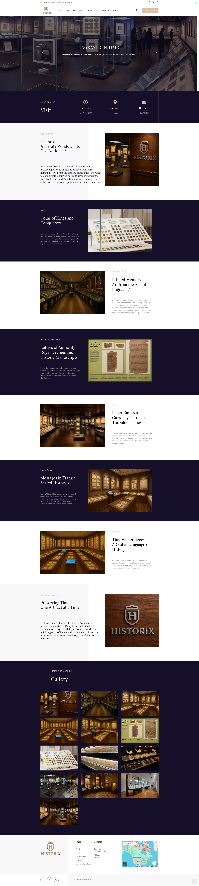

وبسایت برند Historix که روی وردپرس و المنتور طراحی و راهاندازی شد.
مشاهده historix.ca →
زمینه
Historix.ca به یک وبسایت برند نیاز داشت که برای مخاطب کانادایی معتبر به نظر برسه و در عین حال نگهداری سادهای داشته باشه. از صفر روی وردپرس و المنتور طراحی و ساخته شد — کار هویت بصری، ساختار محتوا، و قالبهای المنتور که تیم میتونه خودش بهروز کنه.
تکنولوژی